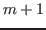
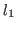
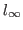

Next: About this document ...
Alexander, R Toth
Local convergence analysis for Anderson acceleration
4546 Mistiflower Dr
Raleigh
NC 27606
artoth@ncsu.edu
Carl, T Kelley
Anderson acceleration is a method used to improve convergence rates of
fixed-point iterations. In this method, a new iterate is computed as a
linear combination of up to

( is a user-defined parameter)
previous evaluations of the fixed-point map, where the coefficients are
obtained by solving a least-squares problem over linear combinations of
the corresponding fixed-point residuals. Past analysis of this method has
primarily dealt with showing the relation between this method and GMRES
and quasi-Newton methods. We consider the case where the fixed-point map
is a contraction and directly prove that the method is locally r-linearly
convergent under an assumption of boundedness of the sum of the absolute
values of the linear combination coefficients. We show that in a
particular case, this boundedness assumption is satisfied and the
convergence is q-linear. We also show that the optimization problem for
the coefficients may be solved with respect to any norm. Using the
is a user-defined parameter)
previous evaluations of the fixed-point map, where the coefficients are
obtained by solving a least-squares problem over linear combinations of
the corresponding fixed-point residuals. Past analysis of this method has
primarily dealt with showing the relation between this method and GMRES
and quasi-Newton methods. We consider the case where the fixed-point map
is a contraction and directly prove that the method is locally r-linearly
convergent under an assumption of boundedness of the sum of the absolute
values of the linear combination coefficients. We show that in a
particular case, this boundedness assumption is satisfied and the
convergence is q-linear. We also show that the optimization problem for
the coefficients may be solved with respect to any norm. Using the 
or 
norm in particular, the optimization problem can be solved
as a linear program, which allows the boundedness assumption to be
imposed directly as a bound constraint. Several numerical examples are
presented illustrating these ideas.
Next: About this document ...
Copper Mountain
2014-02-23